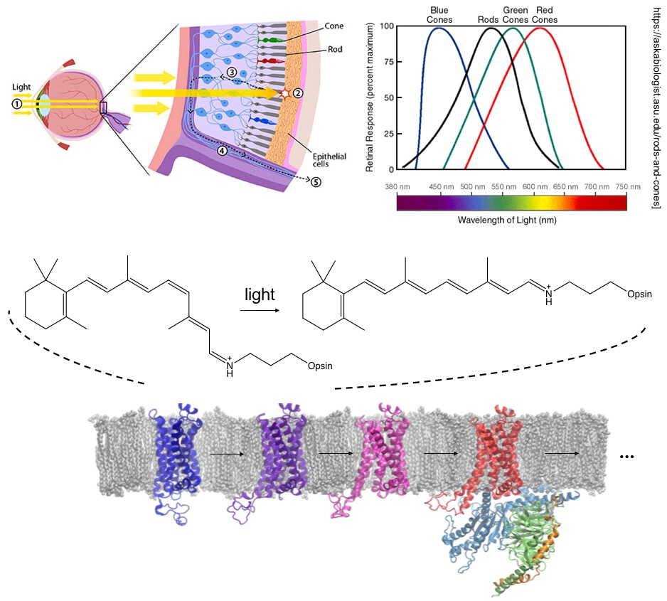

Research
Automatic Active Space Selection
 |
Multireference (strongly correlated) systems are ubiquitous in nature and in new generations of materials. To study multireference systesm, it is common to use multiconfigurational methods. However, the procedure for selecting an active space for the reference wave functions of multiconfigurational methods is often nonsystematic. We have developed several approaches to systematically select the active space to generate reasonable reference wave functions for multiconfiguration pair-density functional theory to accurately predict the excited states of various molecules.
|
Charge Transfer in Molecules and Materials
We use multiconfiguration pair-density functional theory (MC-PDFT) and other electronic structure methods to study charge transfer properties in biomolecules and functional materials.
|
 |
The retinal molecule has been an important prototype target of photochemistry research for decades. It is covalently bound to a type of G protein-coupled receptors (GPCRs), opsins, which are responsible for vision. The retinal ligand undergoes cis-trans isomerization upon light, which triggers conformational changes in the opsin protein from the “inactive state” to the “active state”. The activated opsin is involved in signal transduction in cells, which is eventually transformed into visual signals in brains. The absorption maximum of retinal is sensitive to the mutations in the protein. Therefore, it is essential to predict the absorption spectrum of retinal accurately. However, the presence of charge transfer excitations in this molecule and its analogues poses a challenge for Kohn-Sham density functional theory (DFT), and the large size of the molecule makes multiconfigurational perturbation theory methods expensive. We have demonstrated that MC-PDFT provides an efficient way in predicting the vertical excitation energies of retinals. With this tool, we will be able to understand and design other chromophores important for biological and energy research. |
Sijia S. Dong, Laura Gagliardi, Donald G. Truhlar. Excitation Spectra of Retinal by Multiconfiguration Pair-Density Functional Theory. Phys. Chem. Chem. Phys., 2018, 20, 7265-7276. (Link)
Protein Structure Prediction
G protein-coupled receptors play critical signaling functions for numerous cellular processes, making important targets for therapeutics. About 40% of drugs on the market target on these membrane proteins. However, developing such therapeutics is complicated because the activation of GPCRs that is integral to their function involves multiple distinct conformations along the pathway for activation, and obtaining these conformations experimentally is challenging.
 |
To address this challenge, we developed a computational methodology, ActiveGEnSeMBLE, to sample and predict from first principles the multiple conformations along their activation coordinates. We then subjected the predicted structures to molecular dynamics simulations and obtained a quantitative energy landscape that provides insights to GPCRs’ activation mechanisms not easily accessible by experiments. It was, we believe, the first quantitative energy profile for GPCR activation consistent with the qualitative profile deduced from experiments. We have applied the method to a GPCR without an experimental structure and have made experimentally testable hypotheses for drug discovery. |
-
Sijia S. Dong, William A. Goddard III, Ravinder Abrol. Identifying Multiple Active Conformations in the G Protein-Coupled Receptor Activation Landscape Using Computational Methods. Methods in Cell Biology, 2017, 142, 173-186. (Link)
Sijia S. Dong, William A. Goddard III, Ravinder Abrol. Conformational and Thermodynamic Landscape of GPCR Activation From Theory and Computation. Biophys. J., 2016, 110 (12), 2618-2629. (Link)
Sijia S. Dong, Ravinder Abrol, William A. Goddard III. The Predicted Ensemble of Low Energy Conformations of Human Somatostatin Receptor Subtype 5 and the Binding of Antagonists. ChemMedChem, 2015, 10 (4), 650–661. (Link)
Large-Scale Non-Adiabatic Electron Dynamics
 |
We develop a model, Gaussian Hartree Approximated Quantum Mechanics (GHA-QM) With Angular Momentum Projected Effective coRe potEntial (AMPERE), for doing non-adiabatic electron dynamics. GHA-QM is based on the electron force field (eFF) concept, which solves the time-dependent Schrödinger equation with the electrons approximated as Gaussian wavepackets and nuclei point charges. An introduction to eFF is here. The eFF method has been applied to modeling systems and processes involving excited electron dynamics such as warm dense hydrogen, Auger process in hydrocarbon nanoparticles, and electronic effects in brittle fracture of silicon. |
Hai Xiao, Sijia S. Dong, Andres Jaramillo-Botero, William A. Goddard III. Large-Scale Quantum Non-Adiabatic Electron Dynamics Using Gaussian Hartree Approximated Quantum Mechanics With Angular Momentum Projected Effective Core Potential. In preparation.